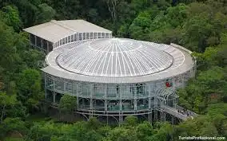

Curitiba, the capital of the state of Paraná, Brazil, has a population of approximately 1,948,626
inhabitants, with an average population density of around 4,186 people per square kilometer. The
city is one of the wealthiest in the country, with a nominal GDP in 2019 of approximately R$
96.2 billion. The main economic sectors include services, industry, and commerce, with a focus
on the automotive industry and information technology. Employment is predominantly driven by the
service sector, followed by industry. Curitiba is renowned for its high-quality education,
housing several higher education institutions such as UFPR and PUCPR. Additionally, the city is
famous for its efficient public transportation system, notably the BRT. Quality of life is high,
with a wide range of parks and green areas, and a well-planned urban infrastructure.
CHECK OUR UPCOMING EVENTS
June Calendar
COME TO VISIT US
WELCOME TO OUR PAGE!
Ukrainian MemorialTanguá ParkEye MuseumWire Opera
